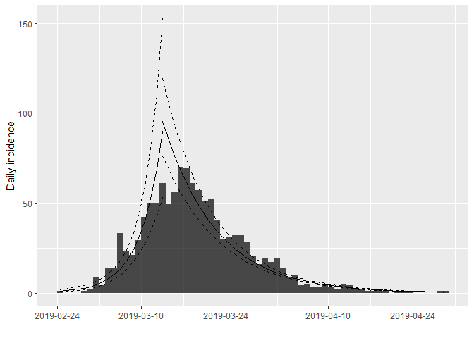

8 Estimating \(R_{0}\) - P1
Aim: To compare final size and exponential growth estimators for \(R_{0}\) using simulated data.
Outline:
Introduction: Models and Data sets
Final Size Method
Regression Method
RECON earlyR Method
8.1 Introduction: Models and Data sets
In Epidemic Practicals 1,2 & 3 you wrote functions to numerically solve and simulate the deterministic and stochastic SIR models. For this practical we have extended these functions to add a latent class and implement the SEIR epidemic model introduced in lectures. If you have time at the end of this practical you can use these functions to simulate your own “Outfluenza” and “Biggles” and explore the performance of the final size and linear regression methods.
However, so we all get the same results, we have provided simulated epidemics of “Outfluenza” and “Biggles” from which we will estimate \(R_{0}\) using the final size, (log)-linear regression and the earlyR method from the R Epidemics Consortium (RECON, https://www.repidemicsconsortium.org/).
Copy “Outfluenza1_cases.dat”, “Outfluenza2_cases.dat” “Biggles_cases.dat”, “SIRmodels.R” and “SEIRmodels.R” which are provided in the shared folder to your working directory.
The simulated outbreaks are provided as line lists, a common instrument used to collect data on individual cases during an outbreak where the date of infection (or rather the notification of a case) is recorded along with other relevant epidemiological information. For our purposes, the date of notification is sufficient to reconstruct the epidemic curve and test our different estimators of \(R_{0}\).
Begin by reading in the line lists and converting the dates (stored as character strings) to date objects:
require(chron)
require(incidence)
# Load line lists of cases for simulated outbreaks
outfluenza1 <- read.table('Outfluenza1_cases.dat')
outfluenza1$x = as.Date(outfluenza1$x)
outfluenza2 <- read.table('Outfluenza2_cases.dat')
outfluenza2$x = as.Date(outfluenza2$x)
biggles <- read.table('biggles_cases.dat')
biggles$x = as.Date(biggles$x)We are going to use the ‘incidence’ package from RECON which has been written to simplify computing, visualising and modelling incidence of infectious disease from dated event data such as line lists.
To illustrate the key functions and concepts we will use ‘incidence’ to construct daily incidence and cumulative incidence curves for the first outfluenza outbreak.
The main workhorse function is called ‘incidence’ which converts a list of dates into an ‘incidence’ object that bins cases into a given interval:
outfluenza1.i = incidence(outfluenza1$x,interval=1)We can see a summary of the incidence object by simply typing the name of the variable:
outfluenza1.i## <incidence object>
## [1183 cases from days 2019-02-24 to 2019-04-29]
##
## $counts: matrix with 65 rows and 1 columns
## $n: 1183 cases in total
## $dates: 65 dates marking the left-side of bins
## $interval: 1 day
## $timespan: 65 days
## $cumulative: FALSESo, the outfluenza1 outbreak consists of 1183 cases over the course of 65 days. We have chosen to bin cases on a daily interval (which is also the default so we could have simply left out this argument and will do so from now on).
The incidence package provides custom plot functions for incidence objects:
plot(outfluenza1.i)
Which should be familiar from the lectures.
You can try experimenting with different intervals to see how this affects the shape of the epidemic curve:
plot(incidence(outfluenza1$x,interval=7))
incidence also allows you to subset curves between start and end dates:
plot(subset(outfluenza1.i,from=outfluenza1$x[1],to=outfluenza1$x[100]))
The cumulate() function returns a the cumulative incidence curve:
plot(cumulate(outfluenza1.i))Finally, you can convert an incidence object to a data frame by using the cast function data.frame():
outfluenza1.df = data.frame(outfluenza1.i)
head(outfluenza1.df)## dates counts
## 1 2019-02-24 1
## 2 2019-02-25 0
## 3 2019-02-26 0
## 4 2019-02-27 0
## 5 2019-02-28 1
## 6 2019-03-01 28.2 Final Size Method
Final size methods for \(R_{0}\) are in themselves a whole field of research. In this practical we will consider the utility of the basic deterministic “first estimate” also known as the final size formula:
\[\begin{equation} \tag{8.1} R_{0} = -\frac{ln(1-z_{f})}{z_{f}} \end{equation}\]
where \(z_{f}\) is the total fraction of the population infected at the end of an epidemic in a closed population.
R0final that returns the value of \(R_{0}\) for a given value of \(z_{f}\). Is there any restriction on the values that \(z_{f}\) can take for the final size equation to be valid? Your function should check that \(z_{f}\) takes a valid value and return a missing value (NA) when the final size equation is not defined.
This formula is more commonly used to predict the final size (\(z_{f}\)) of an epidemic once we have an independent estimate of \(R_{0}\). This is less straightforward as we cannot solve equation (8.1) explicitly for \(z_{f}\). We can progress by rewriting (8.1) into a problem we can solve numerically:
\[\begin{equation} \tag{8.2} R_{0} + \frac{ln(1-z_{f})}{z_{f}} = 0 \end{equation}\]
We can find the final size (\(z_{f}\)) corresponding to a given value of \(R_{0}\), by solving for the value(s) of \(z_{f}\) for which (8.2) is equal to zero. Finding the roots of a function is a common problem, so it should not surprise you that there is a R function to do the job. uniroot uses an numerical procedure to estimate the roots of an arbitrary function f within a fixed interval=c(lower,upper). We can use uniroot to write a function that returns the predicted final size for a given value of \(R_{0}\):
FinalSize <- function(R0) {
return(uniroot(function(zf)
{R0+log(1-zf)/zf},
interval=c(.Machine$double.xmin,1.0))$root)
}Check this function works by trying these test values on the R terminal:
FinalSize(1.2)## [1] 0.3136976FinalSize(1.0)## [1] 6.126547e-05FinalSize(0.9)## [1] -6.103516e-05The exact values may differ slightly between versions of R on different machines.
.Machine$double.xmin is the smallest number (or difference between two numbers) that can be stored in a given version of R. This value may change between versions and on different computer platforms (Windows, Mac OS, Linux…)
8.3 Regression Method
In the lectures we discussed how the early phase of an epidemic can be approximately modelled by an exponential growth model:
\[\begin{equation} \tag{8.3} I(t) = I(0)e^{\Lambda t} \end{equation}\]
where the exponential rate can be related to \(R_{0}\) with the functional form depending on the structure of the epidemic model (in particular with respect to the distribution of latent and infectious periods). If we take logs of both sides of equation (8.3) and rearrange we get the equation of a straight line:
\[\begin{equation} \tag{8.4} log(I(t)) = \Lambda t + log(I(0)) \end{equation}\]
with y-intercept given by the constant \(log(I(0)\) and slope \(\Lambda\). So, we canp therefore obtain a first approximation to \(R_{0}\) simply by estimating the slope of the (logged) epidemic curve.
In principle, estimating \(R_{0}\) using this method could be as straightforward as plotting the incidence or cumulative incidence curve on logarithmic graph paper and fitting a “best-fit” line, or using the Solver in Excel. We can be a little more sophisticated and use the linear regression model (lm) function in R. lm() uses a least squares method, effectively optimising the fit of the straight line to minimise the squared error between the line and the data.
As the exponential approximation is only valid early in the epidemic, including data from the full epidemic curve would bias our estimate of \(R_{0}\). As discussed in the lecture we will use the first 100 cases. For a given simulation we need to select all the data-points up to the 100^{th} case. We can achieve this by sub setting the incidence object as before:
outflu1.sub<- data.frame(subset(outfluenza1.i,from=outfluenza1$x[1],to=outfluenza1$x[100]))We fit a linear model (best straight line fit) to find the slope of the log cumulative cases as described in the lectures:
# Fit straight line to plot of biggles$t (time) and log of the cumulative cases (C)
outflu1.fit = lm(log(1+counts) ~ dates, data=outflu1.sub)We can see the result of the regression by using the summary function:
summary(outflu1.fit)##
## Call:
## lm(formula = log(1 + counts) ~ dates, data = outflu1.sub)
##
## Residuals:
## Min 1Q Median 3Q Max
## -0.7081 -0.3553 -0.1211 0.3675 0.9870
##
## Coefficients:
## Estimate Std. Error t value Pr(>|t|)
## (Intercept) -5.996e+03 7.855e+02 -7.633 1.77e-05 ***
## dates 3.340e-01 4.374e-02 7.635 1.77e-05 ***
## ---
## Signif. codes: 0 '***' 0.001 '**' 0.01 '*' 0.05 '.' 0.1 ' ' 1
##
## Residual standard error: 0.5231 on 10 degrees of freedom
## Multiple R-squared: 0.8536, Adjusted R-squared: 0.8389
## F-statistic: 58.3 on 1 and 10 DF, p-value: 1.768e-05summary() function provides a lot of detailed information on the statistical fit of the regression line – for the purpose of estimating \(R_{0}\) the key value is the estimated slope highlighted in bold above. Using the expression for the SIR model presented in the lectures calculate the \(R_{0}\) of outfluenza using this slope:
We can estimate the uncertainty in our estimate of \(R_{0}\) from the uncertainty in our estimate of the slope from the linear regression. The R function confint() will calculate 95% confidence intervals for our regression model:
confint(outflu1.fit)## 2.5 % 97.5 %
## (Intercept) -7745.8850733 -4245.5519457
## dates 0.2365213 0.4314554The incidence package has built in functions that simplify estimating the exponential growth rate. The base function is fit returns an incidence_fit object which returns details of the fit including the estimated exponential growth rate r and the confidence interval:
outflu1.fit2 <- fit(outfluenza1.i)
outflu1.fit2## <incidence_fit object>
##
## $model: regression of log-incidence over time
##
## $info: list containing the following items:
## $r (daily growth rate):
## [1] -0.0504102
##
## $r.conf (confidence interval):
## 2.5 % 97.5 %
## [1,] -0.06954703 -0.03127338
##
## $halving (halving time in days):
## [1] 13.75014
##
## $halving.conf (confidence interval):
## 2.5 % 97.5 %
## [1,] 9.966597 22.16413
##
## $pred: data.frame of incidence predictions (57 rows, 5 columns)fit ignore dates with 0 incidence?
The estimated \(r\) is much lower than we obtained by our manual estimate. To see what has happened we can add the obtained fit to a plot of the incidence:
plot(outfluenza1.i, fit= outflu1.fit2)We can use the subset function to limit our fit to the first 100 cases as before:
outflu1.sub = subset(outfluenza1.i,from=outfluenza1$x[1],to=outfluenza1$x[100])
outflu1.fit3 = fit(outflu1.sub)
plot(outflu1.sub,fit=outflu1.fit3)
The incidence package provides a method for automatically sub setting the data by finding the optimum fit of two log-linear models (minimising the squared error of both):
outflu1.fit5 = fit_optim_split(outfluenza1.i)
plot(outfluenza1.i,fit=outflu1.fit5$fit)
fit_optim_split now continues information on the two log-linear model fits, the first for the attack of the epidemic, the second describing the decay after the epidemic peak (which is also estimated as the changepoint between the two models).
Examine the output by entering into the R console:
outflu1.fit5Which should also generate a plot of the mean r squared error (R2) of the two log-linear models against different dates for the changepoint:
8.4 RECON earlyR method
Finally we will use the earlyR package implementation of the Tuenis and Wallinga method to estimate \(R_{0}\) and compare to the other methods. The key function of the earlyR package is the get_R function that returns an estimate of \(R_{0}\) when passed an incidence object and a serial interval distribution. The serial interval can be specified manually, but we will use the default gamma distribution which is parameterised by the mean (si_mean) and standard deviation (si_sd). For outfluenza, the serial interval distribution is exponentially distributed with mean equal to the variance (si_mean \(= 5\), si_sd \(= 5\)).
library(earlyR)
estR = get_R(outfluenza1.i,si_mean=5,si_sd=5)
estR##
## /// Early estimate of reproduction number (R) //
## // class: earlyR, list
##
## // Maximum-Likelihood estimate of R ($R_ml):
## [1] 1.001001
##
##
## // $lambda:
## NA 0.1812692 0.1484107 0.1215084 0.09948267 0.2627188...
##
## // $dates:
## [1] "2019-02-24" "2019-02-25" "2019-02-26" "2019-02-27" "2019-02-28"
## [6] "2019-03-01"
## ...
##
## // $si (serial interval):
## A discrete distribution
## name: gamma
## parameters:
## shape: 1
## scale: 5Once again we have obtained a much lower estimate of \(R (R_{0}=1.0)\) than expected as the earlyR method is only valid during the exponential phase of the epidemic. If we subset again using the first 100 cases you should obtain a more consistent estimate of \(R_{0}\) of 2.43.
We can calculated a boostrapped 95% confidence interval for the estimate using the sample_R function:
quantile(sample_R(estR),c(0.025,0.975))## 2.5% 97.5%
## 0.960961 1.071071So our earlyR estimate of \(R_{0} = 2.43\) (2.0-3.0, 95% CI).
Now we have introduced all of the methods, let’s compare the estimates (and confidence intervals where possible) of \(R_{0}\) for our three exemplar outbreaks. Complete the following table by adapted the code you have used in the practical.
Remember that for Outfluenza the mean serial interval is 5 days (standard deviation 5 days). For Biggles the latent period is 5 days, the exposed period is 5 days. As discussed in lectures, adding two exponentially distributed variables together gives a gamma distributed variable. So the serial interval for Biggles will be gamma distributed with a scale parameter of 10 days and a shape parameter of 2, giving a mean serial interval of 10 and standard deviation of \(5\sqrt{2}\). (Ask your instructor for more details if interested!)
| Outbreak | Regression r | Regression \(R_{0}\) | Final Size \(R_{0}\) | earlyR \(R_{0}\) |
|---|---|---|---|---|
| Outfluenza1 | ||||
| Outfluenza2 | ||||
| Biggles |
8.5 Appendix
You might be interested now in explore how well the final size and regression estimators perform on different stochastic replicates of the SIR or SEIR models.
“SIRmodels.R” and “SEIRmodels.R” provide functions to allow you to generate your own simulated epidemics of Biggles and Outfluenza.
To load the functions into the R workspace using the following R code:
source('SIRmodels.R')
source('SEIRmodels.R')
N = 1300“SIRmodels.R” provides two familiar functions:
DetSIR.dyn
Uses the internal R function lsoda() to numerically solve the deterministic SIR model given 5 parameters:
- N: Population size
- I0: Initial infected
- B: transmission rate
- M: “recovery” rate = \(1/T_{I}\) corresponding to average infectious period of \(T_{I}\)
- f_time: run time for numerical solution
create.StocSIR defines an stochastic SIR model to use with the SimInf package and takes 6 arguments:
- N: Population size
- I0: Initial infected
- beta: transmission rate
- m: “recovery” rate = \(1/T_{I}\) corresponding to average infectious period of \(T_{I}\)
- f_time: run time for numerical solution
- reps: number of replicates to simulate
“SEIRmodels.R” provides equivalent functions DetSEIR.dyn and StocSEIR.dyn that implement the deterministic and stochastic SEIR epidemic model respectively.
Both of these functions implementing the SEIR model take 7 parameters in the order that follows:
- N: Population size
- I0: Initial infected
- E0: Initial exposed
- B: transmission rate
- G: “progression” rate = \(1/T_{E}\), with average exposed period of \(T_{E}\)
- M: “recovery” rate = \(1/T_{I}\) corresponding to average infectious period of \(T_{I}\)
- f_time: run time for numerical solution
The deterministic equations for the SEIR are then:
\[\begin{aligned} \frac{dS}{dt} &= -\frac{\beta SI}{N} \\ \frac{dE}{dt} &= \frac{\beta SI}{N} - gE \\ \frac{dI}{dt} &= gE -mI \\ \frac{dR}{dt} &= mI \end{aligned}\]
You can check this new code for the deterministic SEIR model by simulating an epidemic using the Biggles parameters from the lecture and comparing to the figures in the lecture notes:
# Biggles Examplar Epidemic
det.sol<-DetSEIR.dyn(1300, 1,0, 0.5, 1/5.0, 1.0/5.0, 150)
matplot(det.sol[,1],det.sol[,2:5],type='l',xlab='Days',ylab='Population',lwd=2)
Checking the stochastic model is more difficult as the output will be different every time we run it! As a first sanity check we can compare stochastic simulations to the deterministic epidemic, checking that they (roughly) scatter evenly around the “mean” behaviour:
SEIRmodel <- create.StocSEIR(1300, 1, 0, 0.5, 1.0/5.0, 1/5.0, 150,1)
out <- run(model=SEIRmodel)
plot(out)
To simplify working with the incidence package we also provide a wrapper function line_list() that takes a SimInf object (out) as argument, along with a numeric value (node) and returns a line list of dates of cases for specified node:
SEIRmodel <- create.StocSEIR(1300, 1, 0, 0.5, 1.0/5.0, 1/5.0, 150,100)
out <- run(model=SEIRmodel)
line_list(out,1)